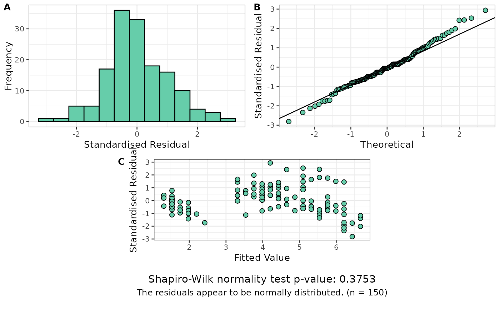
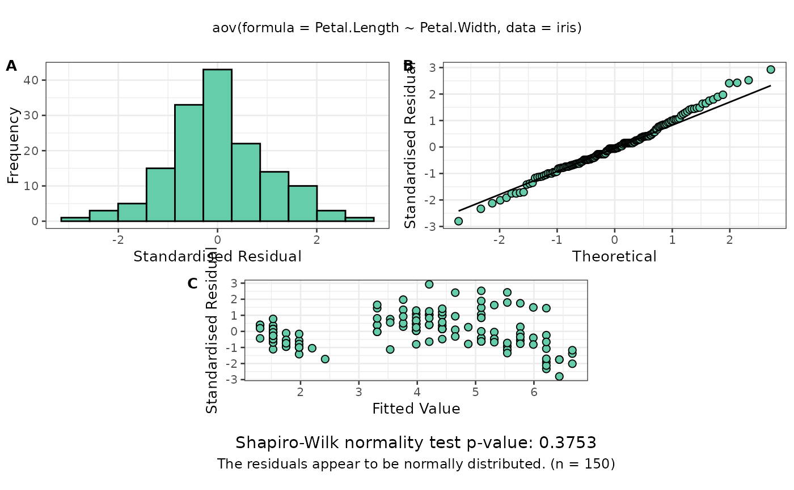

Produces plots of residuals for assumption checking of linear (mixed) models.
Usage
resplot(
model.obj,
shapiro = TRUE,
call = FALSE,
label.size = 10,
axes.size = 10,
call.size = 9,
onepage = FALSE,
onepage_cols = 3,
mod.obj
)Arguments
- model.obj
A fitted model object of a supported class (
aov,lm,lme(nlme::lme()),lmerMod(lme4::lmer()),asreml,mmer/mmes(sommer) orart(ARTool)). See the Supported model types section.- shapiro
(Logical) Display the Shapiro-Wilk test of normality on the plot? This test is unreliable for larger numbers of observations and will not work with n >= 5000 so will be omitted from any plots.
- call
(Logical) Display the model call on the plot?
- label.size
A numeric value for the size of the label (A,B,C) font point size.
- axes.size
A numeric value for the size of the axes label font size in points.
- call.size
A numeric value for the size of the model displayed on the plot.
- onepage
(Logical) If TRUE and there are multiple plots, combines up to 6 plots per page.
- onepage_cols
Integer. Number of columns to use in grid layout when onepage=TRUE. Default is 3.
- mod.obj
Deprecated to be consistent with other functions. Please use
model.objinstead.
Supported model types
resplot() produces residual diagnostics for any model with an
extract_model_info() method. These are currently:
| Model class | Fitted by | Notes |
aov, lm | stats::aov(), stats::lm() | Fixed-effects linear models. |
aovlist | stats::aov() with an Error() term | Multi-stratum aov; each error stratum (except the intercept) is shown as a separate plot. |
lme | nlme::lme() | Linear mixed model. |
lmerMod | lme4::lmer(), lme4breeding::lmebreed() | Linear mixed model. lmebreed() (relationship-based) models also carry class lmerMod; their residuals/fitted values are on the response scale, so the diagnostics are valid. |
lmerModLmerTest | lmerTest::lmer() | As lmerMod. |
asreml | ASReml-R asreml() | Linear mixed model (commercial; not on CRAN). Residual strata are shown as separate plots. |
mmer, mmes | sommer mmer() / mmes() | Linear mixed model. |
art | ARTool::art() | Aligned rank transform model. |
afex_aov | afex aov_car() / aov_ez() / aov_4() | Factorial / repeated-measures ANOVA; a single diagnostic panel from the model residuals. |
glmmTMB | glmmTMB glmmTMB() | Gaussian family only. Non-Gaussian families error with a pointer to DHARMa::simulateResiduals(), since a normal Q-Q plot is not a valid diagnostic for them. |
This set differs slightly from the comparison functions (see
get_predictions()): resplot() additionally supports ARTool (art) models and
sommer's legacy mmer interface. Neither is available for the comparison
functions — ART uses aligned ranks (use ARTool::art.con()), and current sommer
provides no predict() for mmer (refit with sommer::mmes()).
To add a new engine, write an extract_model_info.<class>() method returning
a list with elements facet, facet_name, resids, fits, k and
model_call, and add a row to the table above.
Examples
dat.aov <- aov(Petal.Length ~ Petal.Width, data = iris)
resplot(dat.aov)

resplot(dat.aov, call = TRUE)
